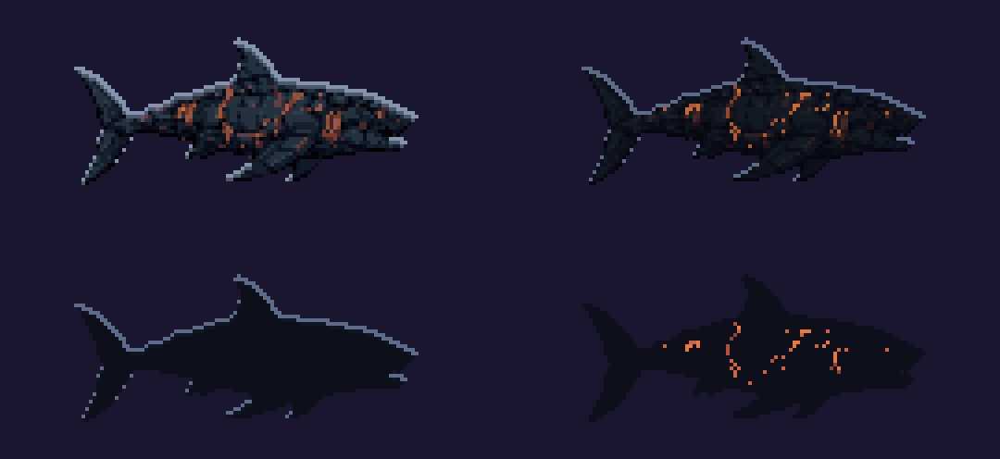
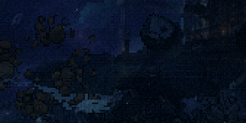
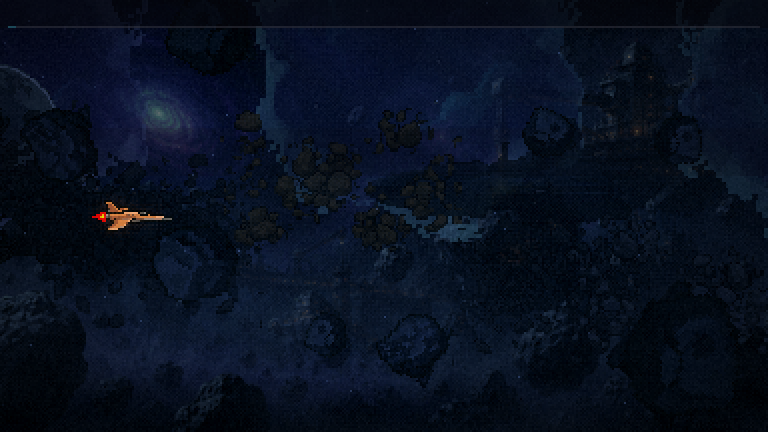
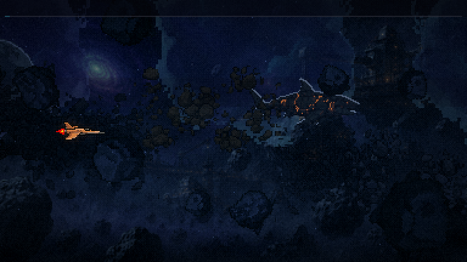
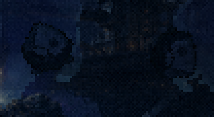
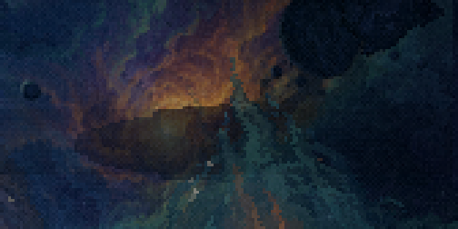

Leviatã novo · rodada 6 · a silhueta ao longe
Bloco D · 19/10/2026. ← rodada 5 · A silhueta aparece no fim da F1, ao longo da F2 (cresce de longe para perto) e na F3.
A base é o nado do menu que você aprovou (PixMiniMax 92), o corpo inteiro, reduzido a 133 px. É o maior tamanho em que ela aparece; o jogo só reduz. Ela nada no lugar, olhando para a direita: o bicho segue em frente, e a nave o alcança pelo rabo, o mesmo rabo da F3.
O problema de hoje: a silhueta leva um tint azul-escuro (a perspectiva aérea: longe é escuro). O bicho novo é quase preto, e com esse tint ele some na F2. Os 4 candidatos variam só em como a distância é assada:

F2, perto escolha o tratamento
O fim da F2, já na chegada do chefão (o maior tamanho). O nado a 6 quadros/s, um ciclo de 2,7 s: mais lento que o do menu (10/s), porque gigante longe se move pesado.




F2, longe
O começo da F2: 58 px, quase sumindo. Ele cresce daqui até o tamanho de cima ao longo da fase.


F3, na nebulosa
Contra a nebulosa clara, todos leem como bicho. O "menu" com o tint de hoje fica meio transparente.


para decidir
- O tratamento: menu, aro + lava (a minha aposta: o aro dá a forma no fundo escuro da F2 e a lava dá a identidade, luz só onde há energia), aro ou lava.
- O ritmo do nado: 6 quadros/s (como nos GIFs) ou os 10/s do menu.
Depois da escolha: ela entra no jogo animada (no fim da F1, na F2 e na F3), com o GIF em velocidade real e as sondas da F1/F2.